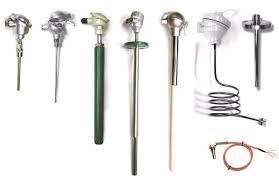
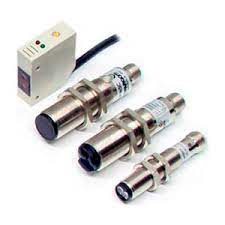
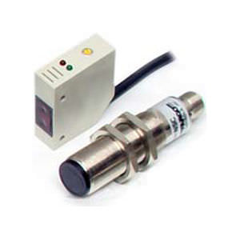
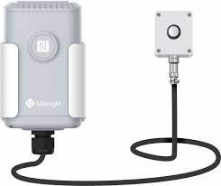
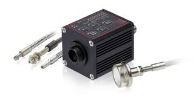

Información sobre los tipos de componentes (vistos anteriormente).
Sensor de temperatura
Sensor de proximidad
Sensor lumínico
La detección de temperatura es la base de todas las formas avanzadas de control de temperatura y compensación. El circuito de detección de temperatura monitorea la temperatura ambiente. Luego puede notificar al sistema la temperatura real o, si el circuito de detección es más inteligente, cuando ocurre un evento de control de temperatura. Cuando excede un umbral específico de alta temperatura, el sistema puede tomar medidas para bajar la temperatura. Un ejemplo de esto es encender un ventilador.
Los sensores de proximidad inductivos representan el mayor volumen de ventas. Integran un circuito oscilante que genera un campo electromagnético. Cualquier pieza metálica que se aproxime a ellos será detectada al fluir una corriente de inducción en el objeto. La oscilación se atenuará y el sensor detectará esta variación en el estado de oscilación.
 Un sensor de luminosidad es un dispositivo que permite conocer el grado de iluminación de un entorno concreto. Los sensores de luminosidad suelen estar conectados a otros dispositivos, que son los receptores de esta información respecto a la luminosidad ambiental detectada y, a partir de esta información, actúan de un modo u otro.
 